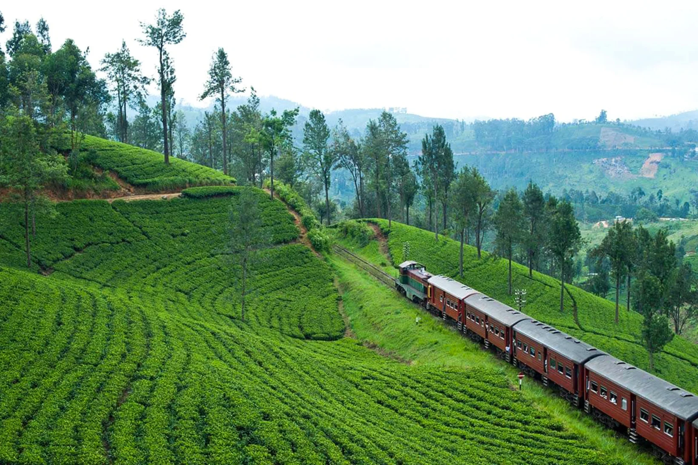

Sri Lankan Tea

1. Production of Tea
1.1. History
Before tea plantations there were cinnamon,coffe,cinchona and cocoa plantations in SriLankan but in the 1830s it was hard to earn profit from the cinnamon platations so because of this british tried to cultivate coffee. Coffee plantations were unsuccessful due to a fungal disease called Hemileia vastatrix or know as coffee leaf disease. Cinchona and cocoa plantations also failed due to an infestation of Heloplice antonie. After these events Ceylon started the production and cultivation of tea.
1.2. Growth
With the arrival of James Taylor in 1867 they sow tea seeds on 19 acres of land. After harvesting the the first crops they were sold locally and because of they had a good feedback in 1873 ceylon tea was sold in london auction for a very good price. After these events production of tea was largely increased in Sri Lanka from 23 pounds to 22,899.8 tons by end of 1890.
2. Tea cultivating areas
Main tea growing areas in Sri Lanka are Kandy, Galle, Ratnapura, Kegalle, Nuwara Eliya, Mathara, Badulla and Bandarawela.
The first tea plantations were cultivated in Kandy. Teas that grow in badulla area has a special flavour due to that reason they widely use teas that are grown in badulla for blends. Tea which is grown in Galle, Mathara and Ratnapura area is called low grown tea because they grown from sea level to 2,000ft.
3. Where Sri Lankan Tea stands today
Sri Lanka is widely famous in the world for Tea production due to it's supreme flavor. Tea industry of Sri Lanka is one of main income source for foriegn exchange and in every tea package which Sri Lanka produces carries a Lion Logo which indicates that it is produced in Sri Lanka. The Lion logo is only applicable when Sri Lankan Tea Board has inspect the product and given the permission to do so.
There is a tea museum in Hantana which is opened by Sri Lankan Tea Board and it helps us to learn how the tea manufacturing was done in early days. Sri Lankan parliment has founded a Tea Research institute for cultivation of Tea.